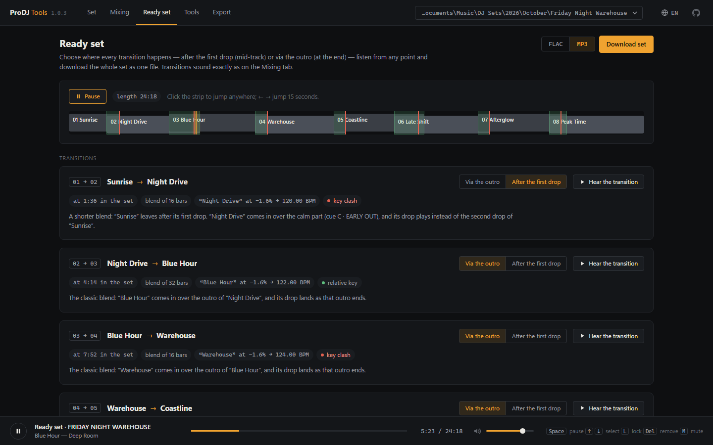

Определение BPM и тональности
Темп с точностью до тысячных BPM, бит-сетка до долей миллисекунды, тональность по колесу Камелота, энергия каждого трека.
Откройте папку с треками — ProDJ Tools определит темп, тональность и энергию каждого трека, предложит порядок для плавного гармонического сведения, расставит точные метки и подскажет, как свести каждую пару.

Всё, что диджей делает перед выступлением вручную, — за минуту и прямо в файлах, которые потом откроет Rekordbox, Serato или любой плеер.
Темп с точностью до тысячных BPM, бит-сетка до долей миллисекунды, тональность по колесу Камелота, энергия каждого трека.
Собирает треки так, чтобы они сводились гармонично и без скачков темпа, по выбранной кривой энергии: разгон, арка, волны, плато, остывание.
Интро, дропы, куплеты, брейки и аутро находятся с точностью до такта. Метки встают на сильные доли и уходят в Rekordbox как hot cue и memory cue.
Когда запустить следующий трек, когда поменять бас и когда убрать предыдущий — с точным временем и номером такта. Два способа: через аутро или после первого дропа.
House, techno, trance, drum and bass, dubstep, хип-хоп, хардкор: для медленных и быстрых треков метки ставятся по настоящему такту.
Весь сет со всеми переходами — в один FLAC или MP3. А ещё порядок в тегах, плейлисты M3U8 и Rekordbox XML с сеткой и метками.
Каждая кнопка всегда значит одно и то же — на любом треке и в любом жанре.
| Кнопка | Метка | Что значит |
|---|---|---|
| A | MIX IN | Начало музыки — отсюда запускают трек при сведении. |
| B | DROP | Первый дроп — самое мощное место трека. |
| C | EARLY OUT | Спокойная часть сразу после первого дропа: здесь можно свести следующий трек, не дожидаясь аутро. |
| D | BREAK | Брейкдаун перед вторым дропом, если он идёт после куплета. |
| E | DROP 2 | Второй дроп. |
| F | MIX OUT | Начало аутро — обычное место, чтобы запустить следующий трек. |
Тёмный интерфейс в духе диджейского оборудования, на 15 языках.




Три шага от папки с музыкой до готового сета в Rekordbox.
Да, полностью. Исходный код открыт по лицензии MIT, его можно смотреть и менять.
Да. Порядок записывается в имена файлов и теги, которые видят обе программы. Для Rekordbox дополнительно создаётся XML с бит-сеткой и метками A–F (hot cue и memory cue).
FLAC, MP3 и WAV. Теги записываются в FLAC и MP3.
Нет. Анализ идёт на вашем компьютере, музыка никуда не загружается.
Пока только Windows 10 и 11.
Перед первой записью исходные имена и теги сохраняются в резервную копию, а кнопка «Вернуть файлы как было» откатывает все изменения.